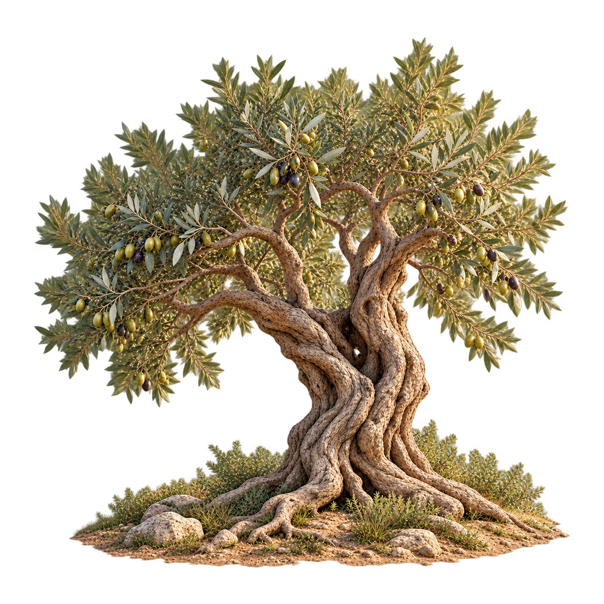

Verbunden · Botanische Identität
Eine Geschichte.
Ein Baum.
Silberne Blätter. Gewachsenes Holz. Raum für das, was du selbst festhältst.
Ein neuer Olivenbaum für FaithPath: als persönliches Bild, ohne deinen Glauben zu bewerten.
Masterillustration öffnen ↗

KI-generierte botanische Illustration · keine App-Integration
Eine gemeinsame Formensprache
Vom Anfang zur eigenen Geschichte.
Der linke, weit ausladende Ast und die aufrechte rechte Gabel prägen die Baumidentität. Samen und Keimling sind Nahansichten. Die Reihe ist eine bildliche Metapher, kein botanischer Zeitraffer.
Die sieben Bilder sind eine gestalterische Entscheidung. Nur ausdrücklich bestätigte persönliche Entwicklungen bestimmen die vorhandene Stufe. Bibellesen, Quizantworten und erledigte Aufgaben führen nicht automatisch zu Wachstum.
Gleiche Fläche · gleiche Stufe
Mehr Charakter. Mehr Tiefe.
Links die unveränderte Illustration aus dem aktuellen App-Code, rechts der neue Entwurf. Kein älterer Screenshot wird als neue App ausgegeben.
Komposition in „Verbunden“
Groß genug für ein Gefühl.
Ruhig genug für den nächsten Schritt.
Isolierte, bedienbare Layoutstudie mit synthetischen Texten. Sie speichert keine Daten. Bibel, Speichern und persönliche Funktionen der echten App werden hier nicht nachgebildet.
Der Baum erhält mehr Fläche, der nächste persönliche Schritt und „Bibel öffnen“ bleiben vor der unteren Navigation erreichbar. Das ist ein Layoutvorschlag, noch keine bestätigte App-Integration.
Design-Gate
Eine visuelle Richtung zur Entscheidung.
Empfehlung: die neue botanische Identität weiterführen. Vor einer Integration müssen Bildregistrierung, Kronenebenen, Astverknüpfungen und reale Geräte geprüft werden.
Phase B wurde nicht begonnen. Kein App-Router, Speicherformat, Bibeltext, Fragenbestand oder Wachstumsschwellwert wurde geändert.